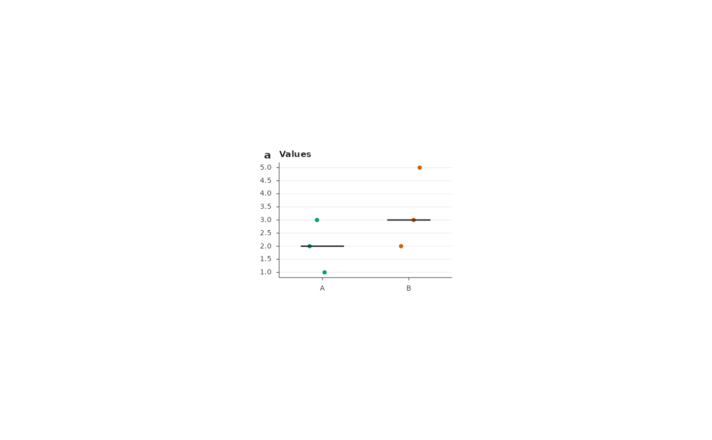

Builds every panel of a figure from a declarative specification and
named plot data, then composes the page. A specification is a list (or a
JSON file) with height_mm, optional width_mm, panels, texts and
legends. Each panel has a box ([left, top, width, height] in mm),
optional letter, letter_at, heading and note, a grammar from
FigureGrammars(), the name(s) of its data and builder args.
Usage
RenderFigure(spec, data = list(), style = ManuscriptStyle())Arguments
- spec
A specification list, a JSON path, several JSON paths or a directory of JSON files.
- data
Named list of data frames (or other inputs) referred to by the panels.
- style
A
ManuscriptStyle()object;spec$styleentries are applied on top.
Value
A ComposeFigure() result.
Details
Positions can also be given as fractions of the page, as in figure code
that places axes with [left, bottom, width, height] fractions: a panel
axes field replaces box, letter_xy replaces letter_at, and a text
or legend xy replaces at (fractions measured from the bottom-left
corner; letters and texts hang from the given point).
A specification may be split over several files: give a character vector
of JSON paths (or a directory of *.json files). Page fields are taken
from the first file that has them; panels, texts and legends are
concatenated in file order.
Colours in args, texts and legends may be hex values, style colour
names ("ink", "muted", ...) or palette entries written
"palette/name" (for example "groups/group1"); character vectors and
named lists of such values are resolved element by element. Every builder
argument whose name ends in colour, color, fill or palette (or
their plurals) is resolved this way, so arguments that name data columns
must not end like that. The value "group" is kept as it is, for
builders that colour by group (label_colour = "group").
Builders with a box_mm argument receive the size of their data area in
millimetres (used for "auto" tick intervals, see NiceBreaks()).
Typesetting (TypesetLabel()) can be switched off with "typeset": false for the whole specification, for one panel (its heading, note and
plot), for one text or for one legend; "typeset": {"off": ["treg"]}
switches off single rules only (see TypesetLabel()).
Legends take labels, colours, shape, ncol, size and the layout
options of LegendKeys() (key_mm, marker_size, row_mm,
text_gap_mm, column_gap_mm, byrow). Texts take label, xy or
at, size, colour, bold, hjust, vjust (a number or
"baseline") and angle.
Examples
d <- data.frame(group = rep(c("A", "B"), each = 3), value = c(1, 2, 3, 2, 3, 5))
spec <- list(height_mm = 50, width_mm = 70, panels = list(
list(box = c(15, 10, 45, 30), letter = "a", heading = "Values", grammar = "group_strip",
data = "values",
args = list(group_colours = list(A = "groups/group1", B = "groups/group2")))))
fig <- RenderFigure(spec, list(values = d))
grid::grid.newpage(); print(fig)
